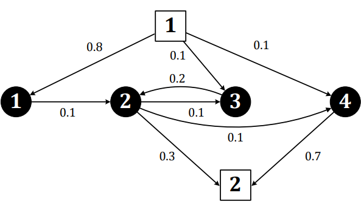
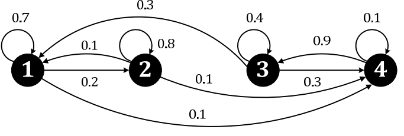
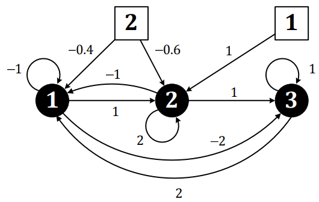

Regola d'oro: Si legge la matrice A per COLONNE.
Caso continuo di trasferimento di risorse
\begin{equation} A = \begin{pmatrix} -0.1 & 0 & 0 & 0 \\ 0.1 & -0.2 & 0.2 & 0 \\ 0 & 0.1 & 0.2 & 0 \\ 0 & 0.1 & 0.2 & 0 \end{pmatrix} \qquad B = \begin{pmatrix} 0.8 & 0 \\ 0 & -0.3 \\ 0.1 & 0 \\ 0.1 & -0.7 \end{pmatrix} \end{equation}

Regola d'oro: La somma dei numeri in colonna deve dare 0
\begin{equation} A = \begin{pmatrix} 0.7 & 0.1 & 0.3 & 0 \\ 0.2 & 0.8 & 0 & 0 \\ 0 & 0 & 0.4 & 0.9 \\ 0.1 & 0.1 & 0.3 & 0.1 \end{pmatrix} \end{equation}

\begin{equation} A = \begin{pmatrix} -1 & -1 & 2 \\ 1 & 2 & 0 \\ -2 & 1 & 1 \end{pmatrix} \qquad B = \begin{pmatrix} 0 & -0.4 & \\ 1 & -0.6 & \\ 0 & -0 & \end{pmatrix} \end{equation}

Regola d'oro: Si ricavano dalle leggi fisiche, isolando le derivate prime.